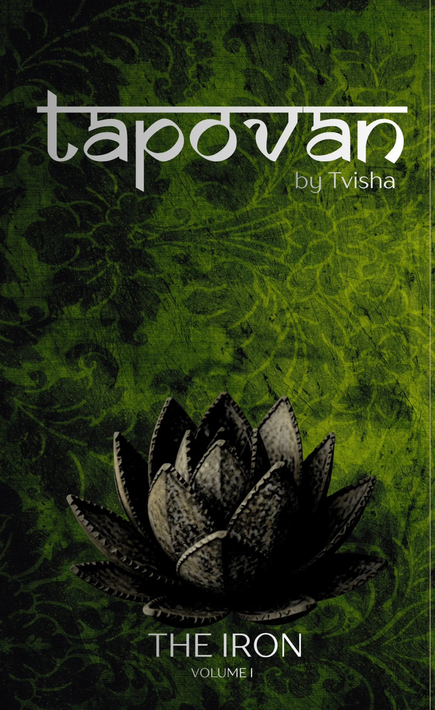

Tapovan · Volume I
Tapovan:
The Iron
Historical fiction rooted in the border territories of Gujarat and Rajasthan.
Iron, when heated, becomes gold.
લોઢું તપી ને સોનું થાય
He could leave her at the village gates and no one would ever know.
Hiranmay Singh is nineteen, five seasons into a drought, raising his four-year-old twin siblings alone since his parents were found murdered in the forest. When he finds a wounded young woman at the foot of a cliff, he carries her home instead, because it does not occur to him to do otherwise.
She gives the household a name that is not hers. Her own is Padmakshi Kumari. A coup has handed her kingdom to the Delhi Sultanate in a single night, betrayed from inside her father’s own council, and her family is under house arrest in their own palace. The soldiers searching every lane in the province are not looking for a village girl.
Between them and discovery stand one festival season, a lane of neighbours who notice everything, and an ironsmith beginning to understand that his father’s death and this woman’s survival are the same story. He has already lost one family to men who came looking for something. The twins are all he has left.
TAPOVAN: THE IRON opens a trilogy spanning two decades of war, statecraft, and a love never spoken aloud. It is the story of what one craftsman will preserve when an empire comes to take it.